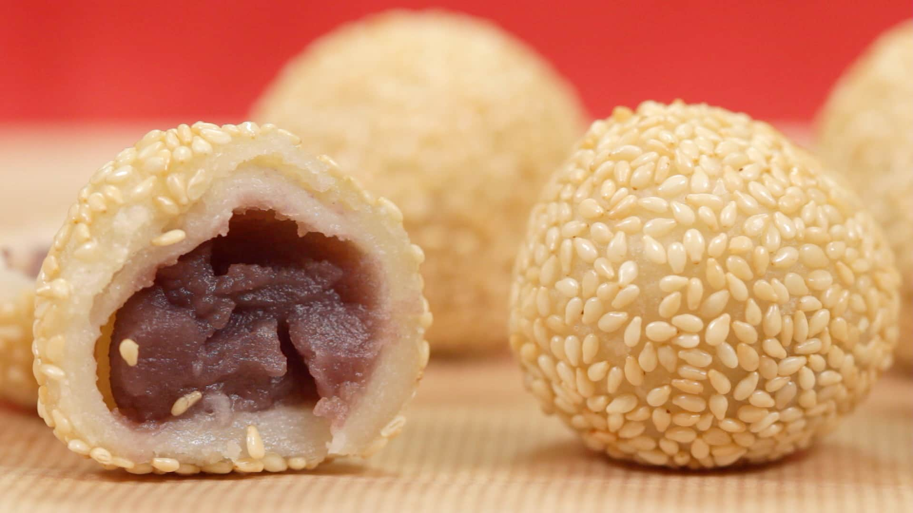

Sweet Sesame Balls
Ingredients
- 1 and ½ cup glutinous rice flour
- 80g (about ⅓ cup+ 2tbsp.) sugar
- 100ml water or 10ml more for adjusting (include the water for small dough), around ⅓ cup+ 1 tbsp.
- ½ teaspoon baking powder (optional)
- 1 cup roasted white sesame seeds
- red bean paste or other filling as needed
- water for dipping
- more glutinous rice flour for dusting
- oil for frying
Instructions
Prepare the small dough
- In a small bowl, take around 2 tablespoon of glutinous rice flour out and mix with around 10ml water.
- Knead to until smooth.
- Bring some water to boil and then cook the small dough for around 2 to 3 minutes.
- Prepare a bowl with cold water on the side.
- Then the small dough is ready, transfer out and soak with cold water to cool down.
Prepare the Main dough
- In a large bowl, mix the left flour with sugar and baking powder.
- And then add the small dough in.
- Break with hand and slowly stir in water.
- Continue kneading until smooth dough.
- Further shape the dough into long log and then divide into 20 equal portions.
- Shape each portion into a round ball.
Assemble the Sesame Balls
- Shape the small glutinous rice balls into a bowl and then wrap around 1 teaspoon red bean paste in.
- Seal completely and shape into a around ball again.
- Prepare two bowls: one with clean water and the other with sesame.
- Take one ball with one hand, quick dip with water and then roll the ball in sesame bowl with another hand.
- This is a personal tip to make the process easier.
- Press the balls several times so the sesame seeds can sticky to the surface.
- Repeat to finish all the sesame balls.
Frying the Balls
- Heat enough oil (at lest cover the balls) until 120 degree C (or you can test the temperature with a smaller ball).
- Carefully add the sesame balls, slow your fire immediately and slowly deep-fry the balls until slightly golden brown.
- Turn off fire; transfer out and absorb extra oil with paper.
- Cool down for several minutes and enjoy!